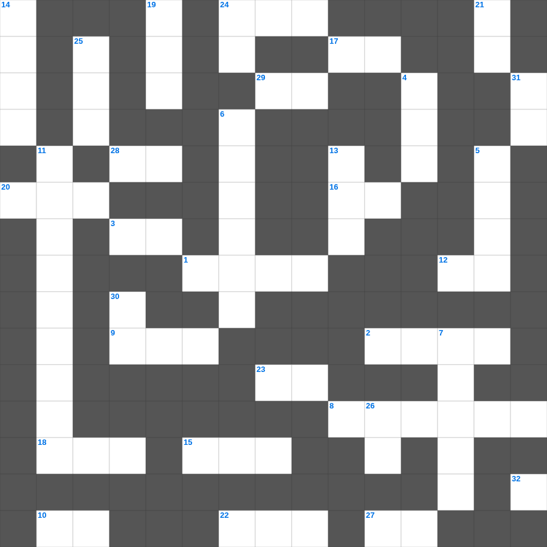

누가복음: 엠마오로 가는 두 제자
📌 서비스 정의
십자가로세로는 교회 주보와 주일학교에서 사용할 수 있는 성경 기반 가로세로 퍼즐 서비스입니다. 성경 인물, 사건, 핵심 구절을 바탕으로 제작되었습니다. 온라인 풀이 및 인쇄 기능을 제공합니다.
📖 누가복음란?
누가복음은 의사 출신 저자 누가가 예수님을 모든 인류, 특히 소외된 자들을 위한 구원자로 그려낸 복음서로, 자세한 역사적 정황과 비유들이 풍부합니다.
📚 누가복음의 주요 사건·주제
예수님의 탄생 이야기(목자들과 천사) · 선한 사마리아인 비유 · 탕자(잃은 아들) 비유 · 예수님의 십자가와 부활 · 엠마오로 가는 길의 만남
오늘은 누가복음의 주요 내용을 담은 누가복음 무료 성경퀴즈를 준비했습니다. 총 35개의 힌트가 있으며, 주일학교 교재나 성경공부 자료로 활용하기 좋습니다. 무료로 즐기는 누가복음 가로세로 퍼즐을 지금 바로 풀어보세요!

📝 가로 힌트
1. 할 수 있거든이 무슨 말이냐 믿는 자에게는 이것이 없느니라
2. 예수님이 세례받으실 때 성령이 이 모양으로 내려옴
3. 부활하신 날은 안식 후 이것
7. 열 처녀 비유에서 준비해야 했던 것
8. 기드온의 용사들이 사용한 도구
9. 니고데모와 예수님의 대화 주제
10. 예수님이 십자가에서 돌아가신 사건
12. 복음을 전하러 외국으로 나가는 일
15. 향을 피워 올리는 곳
16. 밭에 감추인 이것
16. 천국은 밭에 감추인 이것과 같으니
17. 기쁜 소식, 즉 예수 그리스도의 이야기
18. 살인하지 말라, 간음하지 말라, 이것하지 말라
20. 바울이 로마로 가다 난파된 섬
22. 대제사장의 흉패에 박힌 보석 개수
23. 이스라엘 백성이 광야에서 처음 진을 친 곳
24. 솔로몬 성전 건축에 쓰인 고급 나무
27. 백합화는 솔로몬의 이것보다 더 아름답다
28. 십계명이 새겨진 것
29. 땅의 짐승과 기는 것(여섯째 날)
📝 세로 힌트
4. 아론의 지팡이에서 핀 꽃
5. 하나님의 말씀을 가르치고 배우는 곳
6. 지붕을 뚫고 내려온 병자를 고치신 사건
7. 바울과 실라가 감옥에서 한 행동
11. 불무불 속에 던져진 세 친구 이야기
13. 이스라엘의 유일한 여성 사사
14. 교회는 그리스도의 몸
19. 솔로몬이 성전 건축을 위해 백향목을 가져온 곳
21. 바울의 고향
24. 좋은 땅에 떨어진 씨앗은 몇 배의 결실?
25. 한 해의 첫 열매를 드리는 절기
26. 세상에서 가장 먼저 난 사람은?
30. 네 이웃에 대하여 거짓 이것하지 말라
31. 집을 나가 방탕하게 살다 돌아온 아들
32. 모세가 반석을 치자 나온 것
🧩 이 퍼즐에서 배우는 내용
이 퍼즐은 누가복음: 엠마오로 가는 두 제자의 핵심 단어와 개념을 자연스럽게 복습할 수 있도록 구성되었습니다. 주일학교 수업이나 개인 성경공부에서 학습 내용을 점검하는 용도로 바로 활용할 수 있습니다.
🧑🏫 교회 교육 자료 활용
이 퍼즐은 주일학교 교재 추천 자료로 활용할 수 있고, 주일학교 주보에 넣기 좋은 분량으로 구성되어 있습니다. 수업용 주일학교 교안에 활동지로 붙이거나, 예배 후 복습용 주일학교 공과교재로 바로 사용할 수 있습니다.
🏷️ 키워드
누가복음 무료 성경퀴즈, 누가복음, 십자가로세로, 성경퀴즈, 말씀퀴즈, 가로세로퍼즐, 주일학교 교재 추천, 주일학교 주보, 주일학교 교안, 주일학교 공과교재